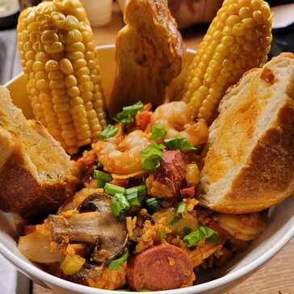

Sausage & Shrimp Jambalaya

Healthy and tasty Jambalaya!
Ingredients:
- 2 tablespoons butter
- 8 ounces andouille sausage, cut into 1/4-inch slices
- 2 tablespoons ground paprika
- 1 tablespoon ground cumin
- 1/2 teaspoon cayenne pepper
- 1/2 cup diced tomatoes
- 1 large green bell pepper, diced
- 2 stalks celery, sliced 1/4 inch thich
- 4 green onions, thinly sliced
- 1 teaspoon salt
Steps on how to prepare:
- Place butter and sausage in a large stockpot over medium heat; cook and stir for 5-6 minutes until sausageg begins to brown
- Stir in paprika, cumin and cayenne; cook for 1 minute.
- Add brown rice and stir to combine. Stir in chicken stock and turn heat to low. Cover and cook for until rice is just tender, about 45 minutes.
- Stir in shrimp, replace lid and cook for 5 minutes. Season with salt and black pepper.
Nutrition Facts
Per Serving 3495 calories; protein 30.3g; carbohydrates 37.3g; fat 25.2g; cholesterol 220.9mg; sodium 1909.3mg.
Click to return Home